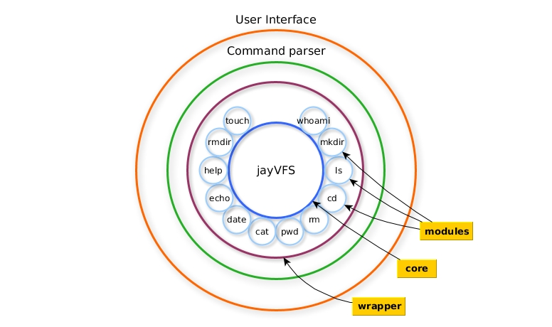

INF Senior Project
Martin Nestorov
Created: 2019-03-11 Mon 14:56
About me!
- I like Linux
- Interested in Low-level System
- Fancies terminals
- Needs a website and a good CV
- Can program
Interactive CV
A web application, showing a terminal emulator, sitting on top of a virtual file system, with an "old-fashioned"-themed console.
Perfect for CV-oriented content!
Specification and Analysis
I've set out a few goals with this
I want this project to be:
From a functional standpoint
- Simple and readable interface
- Be responsive to all inputs
- Hold data in files
- Be robust!
And speaking non-functionally
- Lightning fast!
- Must have high code quality
- Smart and non-intrusive UI
Use cases
Data pipeline

Architecture of Software
We can view the app in different ways!
As an MVC app
or
As a modular system

The M-Tree!
The core of the framework revolves around the VFS
wrapped up->(VFS = B+ Tree + Doubly Linked List)
Comparison between M-Tree and B+ Tree
B+ Tree:
- Has constraints.
- Is self balancing.
- Does traversal from root.
- Leaf nodes hold numerical data
M-Tree:
- Has no constrains.
- Does not balance.
- Has lateral and horizontal movement.
- Leaf nodes hold iNodes (files).
This is the general form
Algorithms
- Tree traversal
- Relative path resolution
- Directory and file mappings
- Individual commands and argument handling
- Remote access
Tree traversal
Relative path resolution
We have 8 cases to handle
# if
ls
awards
education
experience
# then
cd ./awards/../awards/.././education
Directory and file mappings
# we have this
/education /experience /experience/projects /experience/skills /awards
# mapped to this
/education/edu.txt /experience/projects/my_projects.txt
/experience/skills/soft_skills.txt /experience/skills/hard_skills.txt
/experience/skills/languages/langs.txt
Individual commands and argument handling
Many, many commands
- ls
- cd
- rm
- touch
- cat
- pwd
- mkdir
- rmdir
- echo
- and more!
Remote access
Security features
Since all of the data is text based and parsed only on a command based system there is no worry that someone might execute malicious scripts on the host!
No forkbomb!
No malware!
No rm -rf /
Implementation
Everything developed with Emacs + xterm + Arch Linux with:

Some demo code
const express = require('express');
const port = 3000;
let app = express();
app.use(logger('dev'));
app.use(express.json());
app.use(express.static(path.join(__dirname, '.')));
app.use(express.static(path.join(__dirname, 'html')));
app.use(express.static(path.join(__dirname, 'css')));
app.use(express.static(path.join(__dirname, 'src')));
I had a lot of problems with references!!
user.prototype.getDirs = function() {
return JSON.parse(JSON.stringify(this.dirs));
};
M-Tree navigation
mTree.prototype.moveTo = function(dir) {
let workingDir = dir.shift();
if (dir.length === 0) {
let nextSubtree = this.subtrees.find(s => s.name === workingDir);
if (!nextSubtree) {
throw Error('directory doesn\'t exist.');
}
return nextSubtree;
} else {
let nextSubtree = this.subtrees.find(s => s.name === workingDir);
return nextSubtree.moveTo(dir);
}
};
M-Tree directory creation
mTree.prototype.addSubtree = function(dir, parent) {
let workingDir = dir.shift();
if (this.subtrees.find(s => s.name === workingDir)) {
if (dir.length === 0) {
throw Error('File exists');
} else {
let nextSubtree = this.subtrees.find(x => x.name === workingDir);
nextSubtree.addSubtree(dir, nextSubtree);
}
} else {
this.subtrees.push(new mTree(workingDir));
let nextSubtree = this.subtrees.find(x => x.name === workingDir);
nextSubtree.parenttree = parent;
nextSubtree.fullpath = nextSubtree.getFullPath(nextSubtree);
if (dir.length > 0) {
nextSubtree.addSubtree(dir, nextSubtree);
}
}
};
Path resolution
for (let i = 0; i < d.length; i++) {
if (d[i] === '.') {
// do nothing
} else if (d[i] === '..') {
if (wdStree.parenttree.name === 'root' || wdStree.name === 'root') {
wd = ['/'];
wdStree = jvfs.getWdSubtree(wd);
} else {
wd = wdStree.parentree.fullpath.slice();
wdStree = jvfs.getWdSubtree(wd);
}
} else {
if (wdStree.subtrees.find(s => s.name === d[i])) {
wd = wdStree.fullpath.concat(d[i]);
} else {
wd.push(d[i]);
}
Testing
I was my own QA Engineer!
Tested each command combination on both a real terminal and compared with the applications terminal.
Some stress testing as well
// [TEST]
// Create 10 000 files
this.create10000();
// [TEST Implementation]
jayVFS.prototype.create10000 = function() {
for (let i = 0; i < 10000; i++) {
this.createFile(['awards', 'file' + i]);
}
};
// [TEST]
this.create1mil();
// [TEST Implementation]
jayVFS.prototype.create1mil = function() {
// Read complete documentation
let lines = fs.readFileSync('./README.md', 'utf8', function(){});
// Create 1000 directories
for (let j = 0; j < 10000; j++) {
this.mtree.addSubtree(['dir' + j], this.mtree);
// Create in each directory 1000 files
// all filed with the whole documentation
// of this project
for (let i = 0; i < 10000; i++) {
let f = this.createFile(['awards', 'file' + i]);
f.append(lines);
}
}
};
Results and Conclusion
I think it was a success!